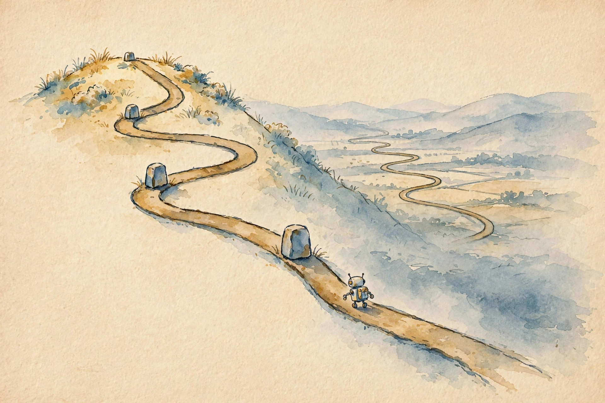
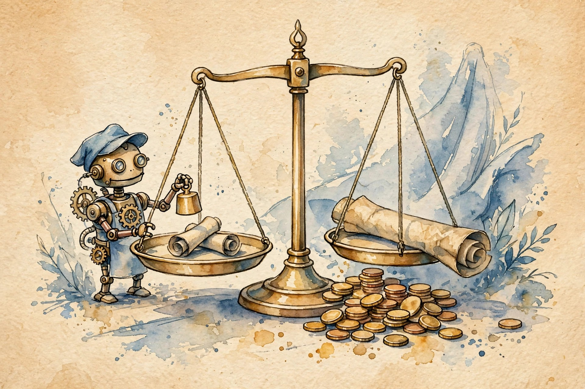
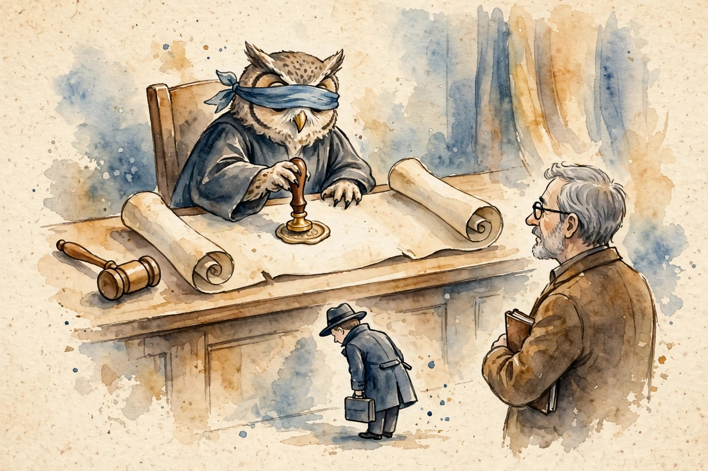

Narrated from the lesson document
A benchmark is a contract: it says what counts, who judges, and what it costs. This companion walks Unit 08: duration as the difficulty axis, value-weighted tasks, GDPVal and DeepScholar-Bench, the mean-minimum flip, stopping rules, judge contamination, eval budgets, ablations, project gates, negative results, and the open questions.
From the lesson The idea, and every number beside it, comes from the cited section of u08_long_horizon_eval.md. The phrasing is the companion’s.
Illustration Invented by the companion: an analogy, a toy with made-up values, or a what-if. Never lecture content.
companion Companion voice: the idea above the tag is from the lesson. The generalization below it is the companion’s.
Provenance: no full lecture transcript exists for session 17. This page narrates the lesson document content/v2/cs329a/lessons/u08_long_horizon_eval.md, not a video. Benchmark names come from the official schedule through the lesson. The builder did not inspect paper contents. Toy numbers are the lesson’s own computed values, re-plotted here with section citations. Claim class: SOURCE ATTRIBUTION PENDING on paper pointers. Toys are computed and traceable. No benchmark numbers are claimed.

Section 1 · C01
From the lessonC01 §3
Duration is difficulty in disguise. A longer task needs more steps, and every step can fail. More context to hold, and more chances to drift. More decisions, and more error that compounds. The curve (success versus hours) is the honest report card: one number per horizon, not one number for all.
From the lessonC01 §2, §6
The toy: the agent scores 0.90 on 15-minute tasks. What about 8-hour tasks? (0.25, 0.90), (1, 0.70), (4, 0.50), (8, 0.35). Success decays with horizon. Drop from 15 minutes to 8 hours: 0.55 absolute, more than half the score. Per doubling of duration past 1 h, success falls about 0.15-0.20. The curve says: this agent is a 1-hour agent, not an 8-hour agent.
From the lessonC01 §6 Pick a horizon. The toy reads the lesson’s curve.
Short-task scores do not extrapolate.
Section 2 · C02

From the lessonC02 §3
A task’s value is what the work is worth, not how clever it is. Value = time saved times the hourly value of that time. A benchmark of valuable tasks measures the agent against work people pay for. Puzzle benchmarks measure against work nobody does.
From the lessonC02 §2, §6
The toy: which task matters more: a 2-hour task or a 30-minute task? Task A: 2 h at $150/h = $300. Task B: 8 h at $80/h = $640. Task C: 0.5 h at $400/h = $200. Value ranking: B, A, C. Duration alone misranks. Total: $1,140. B is 56 percent of the value. An agent that aces A and C but fails B captures $500 of $1,140, only 44 percent, despite winning 2 of 3 tasks.
From the lessonC02 §6 Toggle which tasks the agent passes. The toy computes value capture.
An unweighted benchmark treats a 5-minute puzzle and an 8-hour analysis equally.
Section 3 · C03

From the lessonC03 §3
GDPVal treats the agent like a job candidate. The tasks are real deliverables (briefs, analyses, plans), not puzzles. The judge does not know which work is the machine’s. The score is a win rate: how often the agent’s deliverable is preferred over the human expert’s. A public gold subset (220 tasks) anchors the leaderboard. A larger held-out set keeps it honest.
From the lessonC03 §1
Reading pointer: GDPval: Evaluating AI Model Performance on Real-World Economically Valuable Tasks (SOURCE ATTRIBUTION PENDING). The benchmark’s design is taught, not its scores.
From the lessonC03 §2, §6
The toy: 1,320 tasks total, 220 gold (public), 1,100 held-out. Occupations: 44, sectors: 9. Experts average 14 years of experience. If an agent wins 660 of 1,320 comparisons, its win rate is 0.50: tied with the experts on average. The gold set alone (220) gives a noisier estimate: SE = sqrt(0.5×0.5/220) = 0.034.
From the lessonC03 §6 Move the slider. The toy applies the lesson’s standard-error arithmetic.
Blinding removes the judge’s bias toward (or against) machines.
Section 4 · C04
From the lessonC04 §3
The benchmark grades the research, not the prose. Three dimensions: Knowledge Synthesis (is it organized, does it cover the key facts), Retrieval Quality (are the sources relevant, important, and complete), Verifiability (do the citations actually support the claims). A system can write beautifully (Organization 0.80) while missing the key facts (Nugget 0.35): the split is the point.
From the lessonC04 §1
Reading pointer: DeepScholar-Bench: A Live Benchmark and Automated Evaluation for Generative Research Synthesis (SOURCE ATTRIBUTION PENDING). The benchmark’s design is taught, not its scores.
From the lessonC04 §2, §6
The toy task: given a paper’s title and abstract, retrieve from the live web and write the related work with citations. Toy scores: Organization 0.80, Nugget Coverage 0.35, Relevance 0.60, Reference Coverage 0.25, Document Importance 0.10, Citation Precision 0.70, Claim Coverage 0.55.
From the lessonC04 §6 Press the button. The toy diagnoses the lesson’s profile.
One overall score would hide the failure.
Section 5 · C05
From the lessonC05 §3
Success is the mean. Reliability is the worst case. The mean hides the disaster task. The minimum exposes it. Deployments fail at the minimum, not the mean. A team that ships on the mean ships the disaster.
From the lessonC05 §2, §6
The toy: A: [0.90, 0.55, 0.85]. B: [0.72, 0.74, 0.70]. A mean = 0.7667, min = 0.55. B mean = 0.72, min = 0.70. Mean picks A (margin 0.047). Minimum picks B (margin 0.15). If the 0.55 task is the production workload, A is a 0.55 agent wearing a 0.77 mask. The lesson flags this exact failure: A is a spiky prototype, B is a flat product.
From the lessonC05 §6 Switch the ranking mode. The toy applies the lesson’s means and minima.
Report both, decide on the minimum when failures cost.
Section 6 · C06
From the lessonC06 §3
Stopping is a comparison: the next hour’s gain versus the next hour’s cost. Run while the gain beats the cost, stop when it does not. Gains shrink and give less each time. Costs stay flat. The crossing point is the answer.
From the lessonC06 §2, §6
The toy: marginal gains per hour: h1 +0.10, h2 +0.06, h3 +0.03, h4 +0.01. Cost: $50/h. Value: 0.01 success = $20. Marginal values: $200, $120, $60, $20. Stop after h3 (the next hour earns $20, below $50). Net values: after h2: $220, after h3: $230, after h4: $200. Best: h3 at $230. The rule earns $30 more than running to h4.
From the lessonC06 §6 Choose the stopping hour. The toy computes the lesson’s net.
No crossing, no stopping rule: that is how budgets burn.
Section 7 · C07
From the lessonC07 §3
A judge that shares the generator’s training shares its blind spots. It rewards what it would write: the same style, the same errors, the same shortcuts. The score measures similarity to the judge, not quality of the work. The fix is distance: a judge from another family, and disagreement as the warning light.
From the lessonC07 §2, §6
The toy: same-model judge agrees with the generator’s self-score 0.85. An independent judge agrees 0.60. The gap 0.25 is contamination: shared blind spots and style preference, not quality. Up to 25 points of the 85 are judge-generator similarity. The honest score is closer to 0.60.
From the lessonC07 §6 Move the sliders. The toy computes the lesson’s contamination gap.
The gap is the correlation made visible.
Section 8 · C08
From the lessonC08 §3
An evaluation has three fuels: agent compute, judge cost, and human audit. The total is the sum, but the binding constraint is the max share: it sets how often you can afford to re-run. Cutting the non-binding fuel saves little. Cutting the binding fuel changes the design.
From the lessonC08 §2, §6
The toy: 200 tasks, $2 per task of agent compute = $400. Judge: $0.50 per task = $100. Human audit of 20 tasks: $30 each = $600. Total: $1,100. Shares: 36%, 9%, 55%. Binding: audit. To halve the budget, cut the audit sample from 20 to 10 ($300 saved) rather than the judge ($50 saved).
From the lessonC08 §6 Resize the audit. The toy recomputes the total and the binding share.
Teams that budget only agent compute discover the judge bill later.
Section 9 · C09
From the lessonC09 §3
An ablation removes one component and re-measures. The delta is the component’s contribution, in the context of the rest. It is the only honest answer to whether each part pulls its weight. Without ablations, every component gets credit for the whole system’s score.
From the lessonC09 §2, §6
The toy: full system scores 0.72. Remove memory: 0.58 (delta 0.14). Remove search: 0.65 (delta 0.07). Remove both: 0.50 (joint delta 0.22). Sum of singles 0.21 vs joint 0.22: interaction +0.01, near-additive. Verdict: memory pulls twice the weight of search. Both stay.
From the lessonC09 §6 Choose a removal. The toy reads the lesson’s deltas.
The interaction check tests whether components substitute or complement.
Section 10 · C10
From the lessonC10 §3
Milestones are gates, not ceremonies. Each gate asks: is this still worth doing? The proposal gate kills vague questions. The midterm gate kills dead baselines. The poster gate forces honesty: the negative results go on the poster, not in a drawer. The kill rule is the mechanism’s teeth: without it, gates are theater.
From the lessonC10 §1
The session also introduces the course project. The gates below mirror the project structure at schedule-line level. C11 and C12 extend that structure: the negative result and the open questions complete the project arc.
From the lessonC10 §2, §6
The toy: proposal gate: the hypothesis that memory deltas grow with horizon, with the falsification that deltas stay flat (predicts 1 h delta 0.14, 8 h delta 0.22). Midterm: baseline memory delta at 1 h = 0.14 measured. Poster: delta at 8 h = 0.22, hypothesis holds. The failed search-delta extension reported as a negative result.
From the lessonC10 §6 Tick the requirements. The toy applies each gate’s kill rule.
Kill early, kill on evidence, kill without shame.
Section 11 · C11
From the lessonC11 §3
A negative result is an answer, not a failure. It says: this path does not work, here is the evidence, here is what it rules out. The file drawer (hiding null results) is the enemy: it fills the literature with false positives. A sloppy null result proves nothing: negative results need the same rigor as positive ones.
From the lessonC11 §2, §6
The toy: hypothesis: search deltas grow with horizon. Predicted growth 0.07 → 0.15. Measured: 1 h delta 0.07, 8 h delta 0.06, difference −0.01 with CI [−0.04, +0.02]. The prediction (0.15) lies far outside the CI. Verdict: rejected. The report adds the power note: the CI is tight enough that a real 0.08 growth would have shown.
From the lessonC11 §6 Set the prediction and the measurement. The toy renders the verdict.
Write the falsification before you run the experiment.
Section 12 · C12
From the lessonC12 §3
Open questions are the map’s blank edges. Each names a gap, why it matters, and what would count as progress. The list is the course’s parting gift: five places where a new researcher can still win.
From the lessonC12 §2, §6
The five, with their progress metrics: long-horizon reliability at 8+ hours (0.70 at 8 h on the duration curve). Judge quality that scales without contamination (gap under 0.05 at $0.10/task). Memory that compounds instead of paging (delta grows with horizon). Kernel-style verifiers outside math and code (a kernel for claims). Autonomy envelope for open-ended work (zero violations for a quarter).
The open questions are the extensions that survived: the ones nobody refuted so far.
Section 13 · The arc
The unit’s arc: duration is the difficulty axis, so plot the curve before trusting a score. Value is the weight axis, so score where the money is. Judges need distance, or their gaps contaminate. Evaluations have three fuels, and the binding one sets the design. Ablations answer who pulls the weight. Gates keep research honest, and negative results are answers too.
Wisdom index · 12 nuggets
Further readings taught in the lesson (title pointers from the schedule, SOURCE ATTRIBUTION PENDING on contents): long-horizon eval design, reliability reporting, optimal stopping, LLM-as-judge bias studies, eval design cost analysis, ablation methodology, the file-drawer literature, the course project spec.